Some Projects
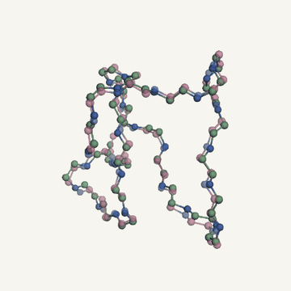
Microfold: 3D Peptide Structure Prediction
An AlphaFold inspired geometric deep learning architecture that predicts 3D peptide backbones from frozen ESM-2 embeddings, with a simplified Invariant Point Attention module and FAPE loss on DBAASP: 2.84 Angstrom mean validation RMSD on 44 held out peptides.
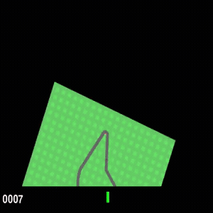
Driving World Model
A world model without a pixel decoder, implemented in PyTorch: RSSM with Block GRU and Gumbel Softmax latents, a Barlow Twins loss replacing the DreamerV3 pixel decoder (about 1.6x faster training), and a TwoHot distributional critic. Scores: 941 on CarRacing v3, 21711 on Hopper v5, 927 on Walker Walk.
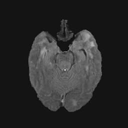
Uncertainty Aware Brain Tumor Segmentation
Implementation and comparison of 8 uncertainty aware U-Net variants on BraTS 2018, with unified training, calibration and uncertainty metrics, and Bayesian hyperparameter optimization.
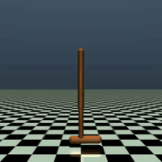
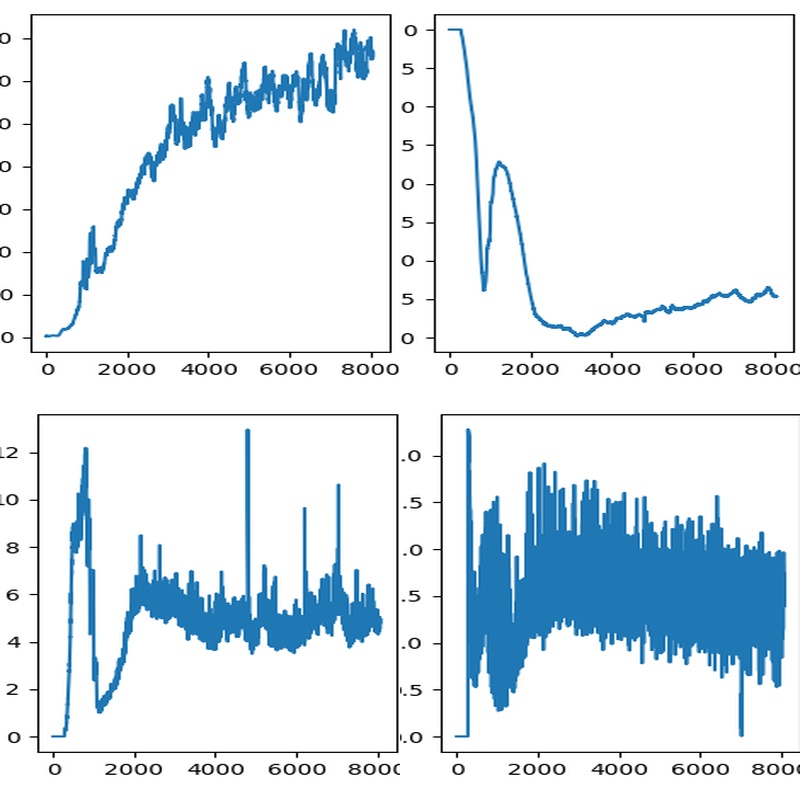
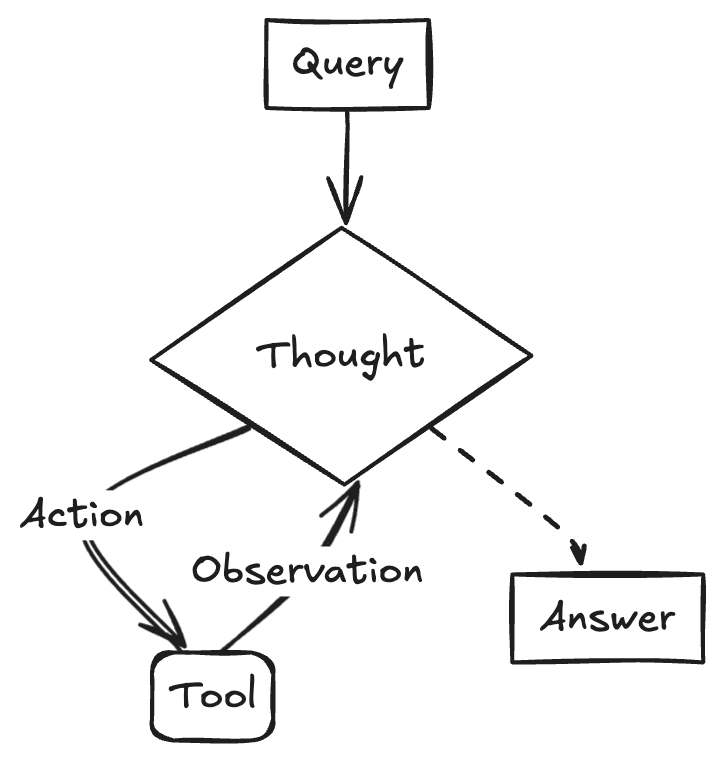
Reasoning Models: SFT, Tool Use, RAG and ReAct Agent
A reasoning stack built in several stages: LoRA fine tuning, tool calling, retrieval augmented generation over Chroma, and a ReAct agent loop exposed through FastAPI endpoints.
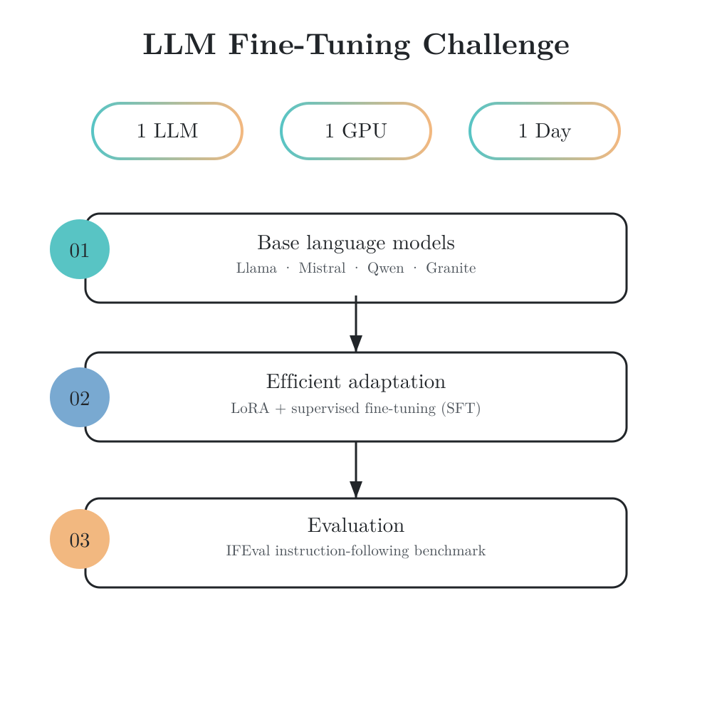
NLP2: LLM Fine Tuning and IFEval
Challenge completed with one LLM, one GPU and one day of training. Benchmarked and fine tuned open LLMs (Llama, Mistral, Qwen, Granite) with LoRA and SFT pipelines, evaluated on instruction following with IFEval.
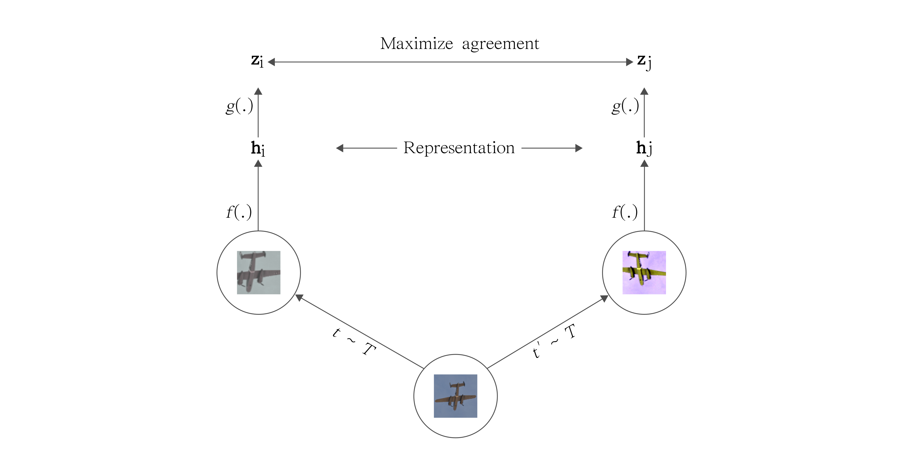
Self Supervised Learning with SimCLR
Reproduction and extension of SimCLR on CIFAR 10 and STL10: ResNet encoders, NT-Xent contrastive learning, linear probing and latent space visualization with t-SNE and PCA.
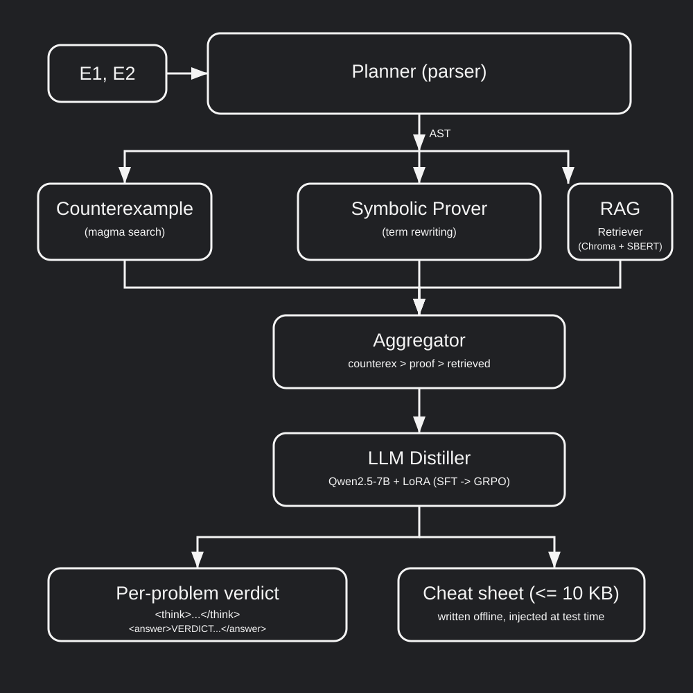
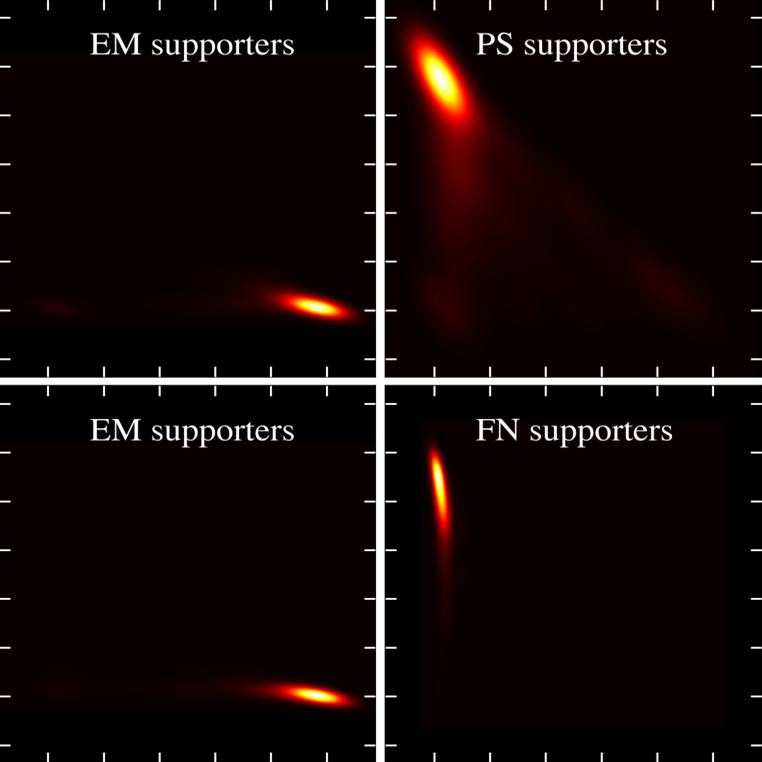
Probabilistic Methods: Electoral Opinion Dynamics
A Markov voter model with zealots over retweet graphs to estimate political opinion equilibria, built with Polars and sparse Torch on social data.
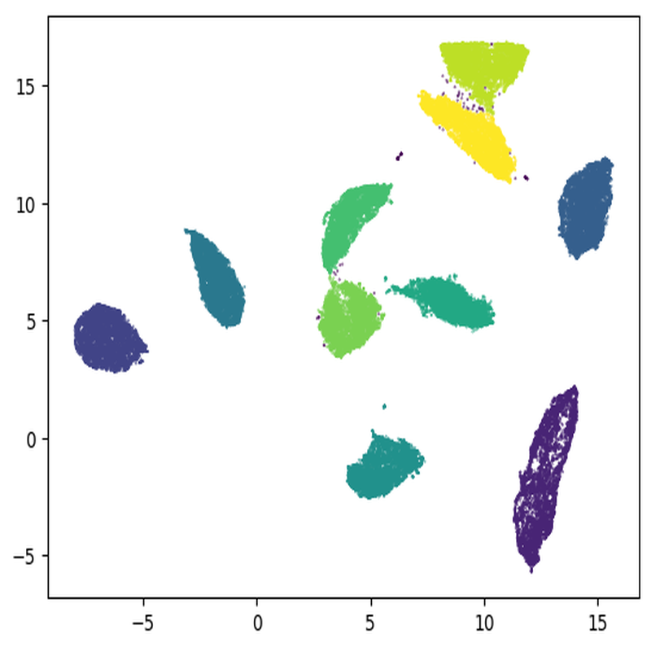
Differential Geometry: Dimensionality Reduction Autoencoder
An autoencoder combined with Laplacian Eigenmaps and UMAP for dimensionality reduction.

Image Captioning with CNN RNN
An encoder decoder captioning model (InceptionV3 + LSTM) with greedy and beam decoding, evaluated with BLEU and CIDEr on Flickr8K and Flickr30K.

TurtleBot3 Autonomous Navigation in ROS 2
An autonomous navigation stack for a TurtleBot3 Burger on ROS 2 Humble: finite state machine wall following controller, Monte Carlo particle filter localization with systematic resampling and DBSCAN, RRT* planner with gradient descent path smoothing, and a pure pursuit tracker, validated in CoppeliaSim and on the real robot.
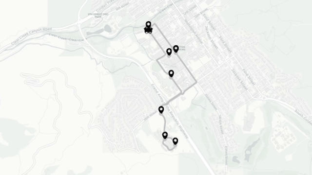
OreCart: Live Shuttle Tracking UI and Backend
A React and Leaflet frontend for real time route and vehicle tracking, with user and driver modes, geolocation streaming and route visualization, together with its Django and Channels backend for WebSocket broadcasting, driver GPS persistence and REST access to location snapshots. Built during my exchange at the Colorado School of Mines.
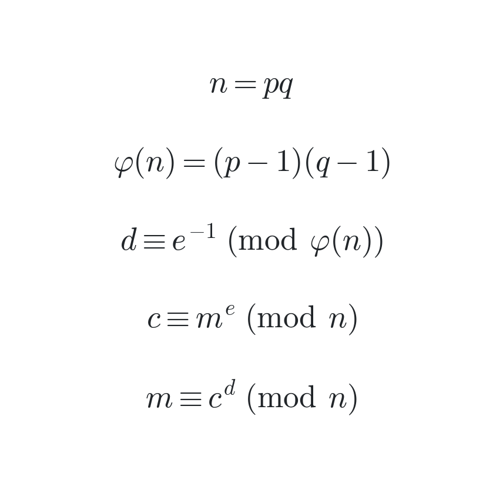
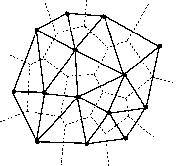
Voronoi and Delaunay Visualization
Geometric visualization in Python of Voronoi diagrams and Delaunay triangulations, with divide and conquer merging and tangent and mediatrix construction.
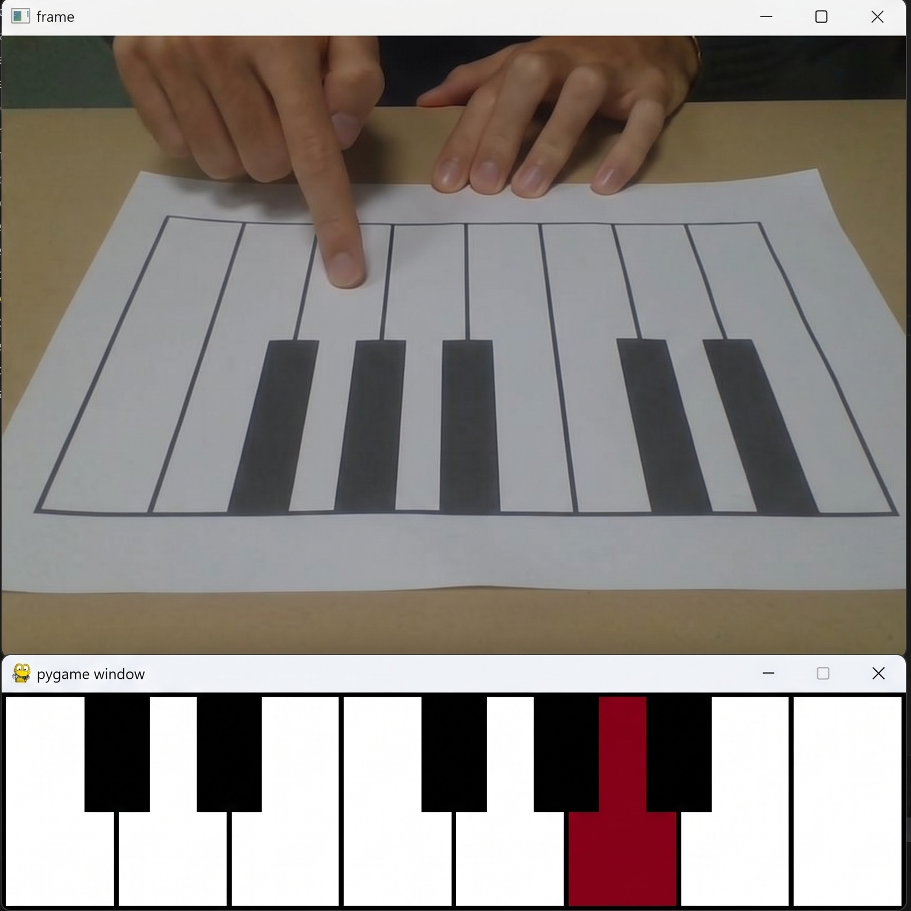
Paper Piano: Computer Vision Interaction System
A vision pipeline with camera calibration, shape detection, sequence decoding and object tracking, driving a virtual paper piano.
Bachelor's Thesis: AI for Data Compression
A compact Variational Autoencoder using PEFT and LoRA techniques for data compression.